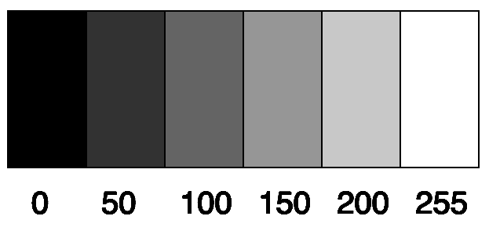

In javascript we can represent the colors black, all grays and white by a number between 0 and 255. the background function can use these colors.
You can change the background of the canvas with the background function.
The background function needs a color as param. Now we only will use
the colors black grays and white.
The value 0 is black
The value 255 is white
And all the values between 0 and 255 will change your background in a gray color
from dark gray to light gray.
background(200);
You can use this function in the setup or in the draw function.
If you use it in the setup function it will be set ones, if you use this function in
draw function it will be called in every loop, max 60 time a second, then it will be set on
top of every thing you have drawn in the previous loops.
60 times a second is very fast, you can slowdown your drawing by setting the frameRate.
A propper value for the frameRate is between 0 and 60. If you don't set the frameRate your
drawing will be as fast as the computer can execute all the instructions inside the drawing function.
function setup(){
createCanvas(300,300);
//slow down to 5 frames a second.
frameRate(5);
}
function draw(){
background(random(255));
}
The random function will pick a number between 0 and max, or between a minimum and a maximum.
random(255) // is a random number between 0 and 255.
random(200,255) // is a random number between 200 and 255.
In the setup code of the example you can see I used a comment line. A comment line begins with // every thing behind the two slashes, the computer will ignore.
It is important to comment your code. So when you read your code a month later you will understand what you were trying to do.
Also whitespace will make your code easer to read.
You can open this example in openprocessing by clicking the link at the bottom of the page.
In openprocessing you can "FORK" a sketch, that is copy a sketch, change it and save it as your own.
copyright Ria Stroes © 2016, www.riastroes.nl